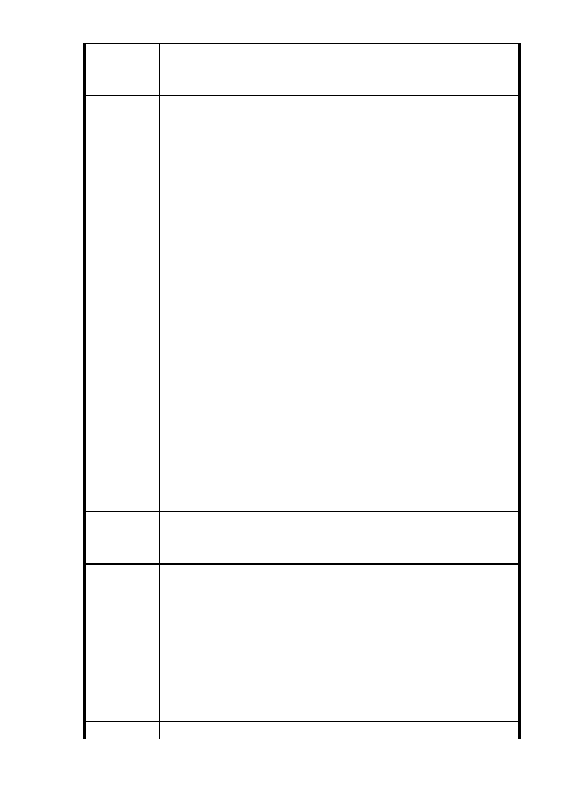

七層樓建物住戶刻意打壓、矮化，並採一致性分配處理原
則，比照現有周邊四層樓住戶之面積分配結果作為分配（外
加一車位）。
建議辦法
（一）同編號 9-7 研析意見。
（二）本開發案未來權益分配狀況會受周遭區域環境、基地
面積與完整性、使用分區、規劃產品定位及市場行情
等因素影響。故捷運工程局於說明會或座談會時預估
比例係為向地主說明之假設參考值，並非本開發案最
終權益分配比例。
（三）土地所有權人之地上建物之價值係依據「臺北市舉辦
公共工程拆遷補償自治條例」及「臺北市舉辦公共工
程拆遷補償自治條例施行細則」等規定查估後，先領
取建物補償費、達成協議價購獎勵金、限期拆遷獎勵
市府回應
意見
金及人口遷移費等，與一般都市更新案採共同負擔成
本方式不同。
（四）捷運土地開發係以土地參與開發，未來本案權益分配
須俟投資人取得建造執照後，有明確開發產品，並經
鑑價作業程序，委託 5 家不動產估價師事務所及 3 家
專業營建管理廠商辦理土地及建物貢獻成本之鑑價，
依專業顧問評估之建造成本及土地貢獻值提報「臺北
市臺北都會區大眾捷運系統土地開發權益分配審議委
員會」審議，再依審議確定之比例與投資人協商，俟
協商確定後，方得確定權益分配比例。
（五）捷運工程局後續辦理用地之協議價購作業時，配合土
地徵收條例 101 年 1 月 4 日修正施行後，本府後續會
依市價與土地所有權人進行協議。
一、R04 站南側捷二用地，維持公展範圍（基地面積 3,328
委員會決議
㎡），並辦理土地開發。
二、同「市府回應意見」。
編 號 10 陳情人 賴芬蘭
看到這段捷運經過的路段會讓人非常擔憂，因為很明顯的會
經過環評中所提到的地下斷層。現在竟然可以說是在 921 地
震和 311 地震的時候都沒有發生事情，所以這條地下斷層不
陳情理由
會產生問題而執意要開發這段捷運。用常識就可以判斷，隨
著捷運工程的向下開挖及隨之而來在所有捷運站附近必然導
致的房地產的大量興建。對地質的破壞總是會在其中一項建
設中導致崩潰，人民生命財產的損失以及全民要繼續共同承
擔的後果是很難估量的。
建 議 辦 法 請審慎評估不要貿然進行。
- 54 -